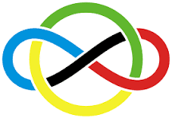
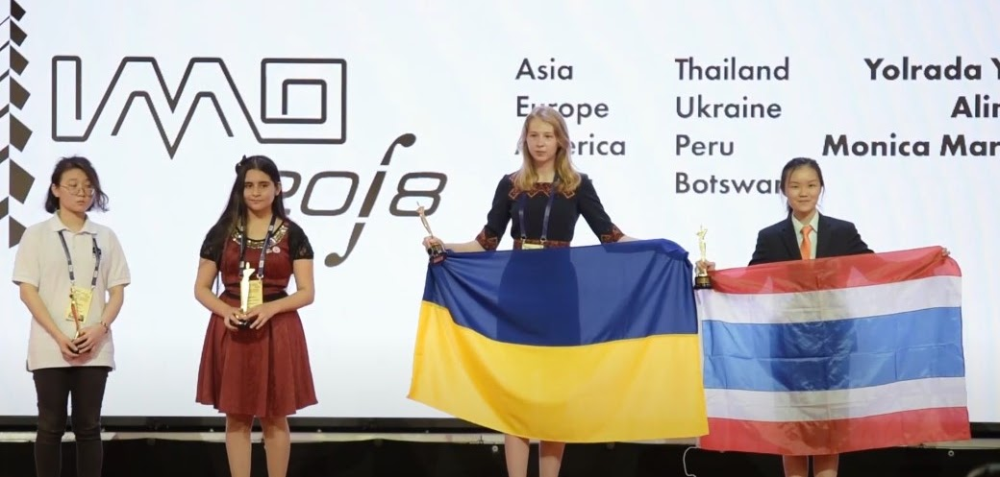
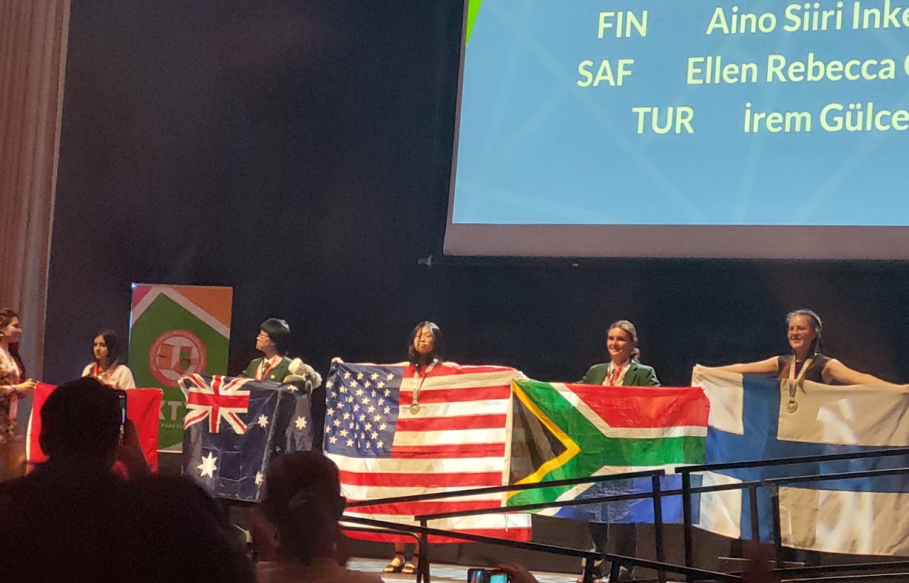
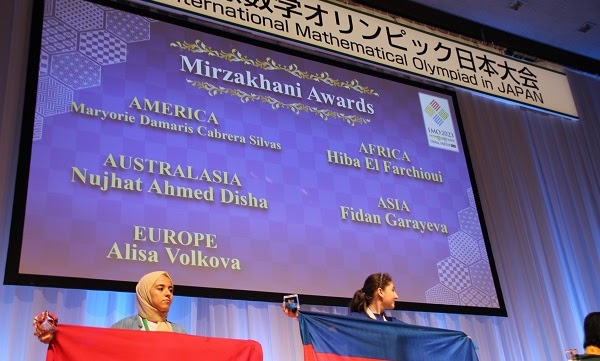
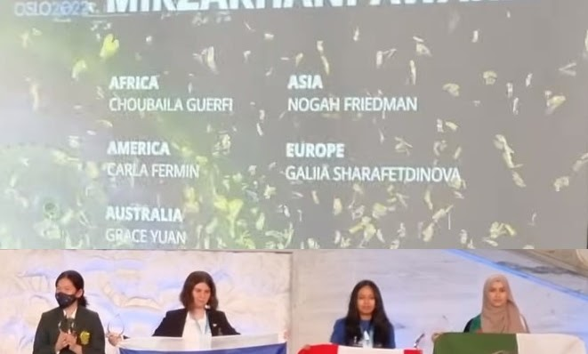
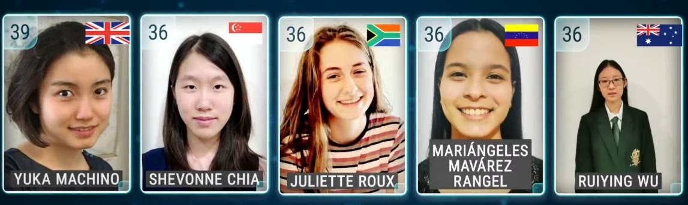
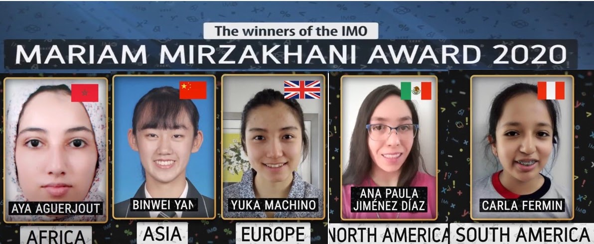
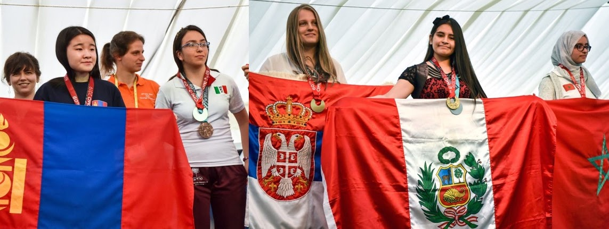

Prêmio internacional para meninas
Prêmio Meninas Olímpicas IMO · Mirzakhani Award
Um reconhecimento internacional criado a partir da iniciativa do Movimento Meninas Olímpicas para valorizar meninas com destaque na International Mathematical Olympiad.


IMO 2018 homenageia o Movimento
Como surgiu o prêmio especial para meninas na International Mathematical Olympiad
O prêmio especial para meninas concedido pela International Mathematical Olympiad (IMO), chamado Prêmio Meninas Olímpicas, foi sugerido pelo Movimento Meninas Olímpicas na IMO 2017, no Rio de Janeiro. Os primeiros prêmios receberam o nome do Movimento Meninas Olímpicas do Brasil (Universidade Federal de Santa Maria).
A vencedora da Medalha Fields, Maryam Mirzakhani, morreu em 14 de julho durante a IMO 2017, e pareceu natural que os prêmios futuros fossem nomeados em sua memória.
Entre 2017 e 2022, os prêmios foram concedidos pela organização anfitriã sem referência direta ao regulamento geral da IMO. Ainda assim, consolidaram-se como uma homenagem importante à presença feminina na matemática olímpica internacional.
Imagens do prêmio
Momentos, homenagens e premiações em diferentes edições




Edições do prêmio
Vencedoras por edição e continente
As listas abaixo reúnem as estudantes homenageadas em cada ano da IMO.
IMO 2024Reino Unido
Mirzakhani Award 2024
- Ellen Rebecca Grant-SmithÁfrica do Sul · África
- Jessica WanUSA · América
- Xiangyue (Laura) NanBangladesh · Austrália
- Irem Gulce YazganTurquia · Ásia
- Aino Siiri Inkeri AulankiFinlândia · Europa
IMO 2023Japão
Mirzakhani Award 2023
- Hiba El FarchiouiMarrocos · África
- Maryorie Damaris Cabrera SilvasEl Salvador · América
- Nujhat Ahmed DishaBangladesh · Austrália
- Fidan GarayevaAzerbaijão · Ásia
- Alisa VolkovaIndependente · Europa
IMO 2022Noruega
Mirzakhani Award 2022
- Choubaila GuerfiArgélia · África
- Nogah FriedmanIsrael · Ásia
- Grace YuanAustrália · Austrália
- Galiia SharafetdinovaIndependente · Europa
- Carla FerminPeru · América do Sul
IMO 2021Federação Russa
Mirzakhani Award 2021
- Juliette RouxÁfrica do Sul · África
- Shevonne ChiaSingapura · Ásia
- Ruiying WuAustrália · Austrália
- Yuka MachinoReino Unido · Europa
- Mariángeles Mavárez RangelVenezuela · América do Sul

IMO 2020Federação Russa
Mirzakhani Award 2020
- Aya AguerjoutMarrocos · África
- Binwei YanRepública Popular da China · Ásia
- Yuka MachinoReino Unido · Europa
- Ana Paula Jiménez DíazMéxico · América do Norte
- Carla FerminPeru · América do Sul

IMO 2019Reino Unido
Mirzakhani Award 2019
- Mariam El KhatriMarrocos · África
- Dolgormaa BatsaikhanMongólia · Ásia
- Jelena IvančićSérvia · Europa
- Ana Paula Jiménez DíazMéxico · América do Norte
- Monica Martinez SanchezPeru · América do Sul
IMO 2018Romênia
Prêmio Meninas Olímpicas 2018
- Shuyu JiaoBotswana · África
- Yolrada YongpisanpobTailândia · Ásia
- Alina HarbuzovaUcrânia · Europa
- Monica Martinez SanchezPeru · América

IMO 2017Brasil
Prêmio Meninas Olímpicas 2017
- Garam ParkBotswana · África
- Dain KimRepública da Coreia · Ásia
- Violeta NaydenovaBulgária · Europa
- Qi QiCanadá · América do Norte
- Carolina OrtegaColômbia · América do Sul
Legado
Um prêmio que ampliou a visibilidade das meninas na matemática olímpica
Ao conectar a trajetória da IMO ao legado de Maryam Mirzakhani e à atuação do Movimento Meninas Olímpicas, o prêmio fortalece o reconhecimento internacional de jovens matemáticas e inspira novas participantes em diferentes países.
Meninas olímpicas de hoje serão as mulheres nos espaços de decisão do amanhã.
Desde 2016 incentivando as meninas olímpicas.